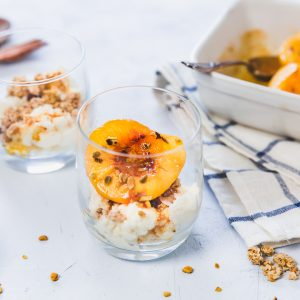

Pêches rôties au miel

Aujourd’hui je vous retrouve avec une recette que je suis entrain de terminer de déguster et vu la rapidité avec laquelle je l’ai réalisée je me suis dit que j’allais prendre quelques minutes pour la partager avec vous immédiatement 🙂
Comme l’indique le titre il s’agit d’une recette de pêches rôties au miel et à la fleur d’oranger, servies avec de la brousse de chèvre, des pistaches et du granola maison chocolat/coco! Bref tout un programme donc 😉 Le dimanche matin, j’adore les petits-déjeuners qui sortent un peu de l’ordinaire, qui demandent de prendre un petit peu plus de temps que d’habitude pour les préparer et qui embaument toute la cuisine histoire de commencer cette dernière journée de week-end de la meilleure façon qui soit. J’avais cette idée de faire pêches rôties depuis plus d’une semaine et quand je suis tombée sur cette brousse chez l’épicier vendredi dernier je me suis dit que les pêches rôties serait donc pour dimanche et que ça allait être gourmand très très gourmand!! Pendant mon séjour en Australie j’avais gouter une glace à l’huile d’olive servie dans une pêche rôtie avec des pistaches et une tuile aux amandes et j’avais particulièrement aimé la pêche avec la pistache et c’est de là que me vient cette idée d’en rajouter aujourd’hui malgré la présence du granola. Vous pouvez d’ailleurs choisir de ne mettre que les pistaches ou que le granola (ou les deux comme moi^^). Je vous laisse lire tout ça de plus près avec cette recette express de mon dimanche matin et j’espère qu’elle vous plaira!! Belle dernière journée de week-end à vous ♥
Ingrédients
- Pêche (ou nectarine) - 2
- Beurre - 1 noix
- Miel - 1 càs
- Fleur d'oranger (ou vanille) - 1 càc ou les graines d'une gousse
- Pistaches concassées - 1 poignée
- Granola - 1 poignée
- Brousse de chèvre - environ 1,5 càs par verrine
- Miel - 1 filet par verrine
Instructions
- Préchauffez le four à 180°c
- Épluchez les pêches (ou les nectarines) et dénoyautez-les
- Coupez les en deux
- Dans une poêle, faites fondre le beurre
- Ajouter le miel et l'arôme de votre choix (ici fleur d'oranger mais vous pouvez ne rien mettre du tout)
- Ajoutez les demi nectarines
- Enrobez les du mélange beurre-miel
- Placez les dans un plat allant au four
- Faire cuire 20minutes à 180°
- Pendant ce temps, versez environ 1,5 càs de brousse dans vos verrines (la quantité dépend de la taille des verrines)
- Ajoutez un peu de granola et une pointe de miel
- A la sortie du four, ajoutez une demie pêche rôtie par verrine
- Saupoudrez des pistaches concassées sur le dessus (vous pouvez ajoutez du granola)
- Et pour plus de gourmandise, arrosez d'un peu de jus de cuisson
- C'est prêt (se déguste chaud ou tiède de préférence)
Les tips de la communauté
Recette simple et appétissante très bien reçue. Les commentaires soulignent la facilité de préparation et l'adaptabilité avec différents fromages frais (brousse, ricotta). Quelques questions sur la nature et le goût des accompagnements.
Astuces
- Recette simple et rapide, idéale pour un petit déjeuner spécial ou un dessert léger
- La brousse de chèvre a une texture et un goût léger, similaire à la ricotta, idéale avec le sucré
- Peut se préparer avec ricotta ou tout autre fromage frais crémeux
- Les pêches sont meilleures lorsqu'elles sont de saison et de qualité
Variantes suggérées
- Ricotta à la place de la brousse
- Fromage frais crémeux selon les disponibilités